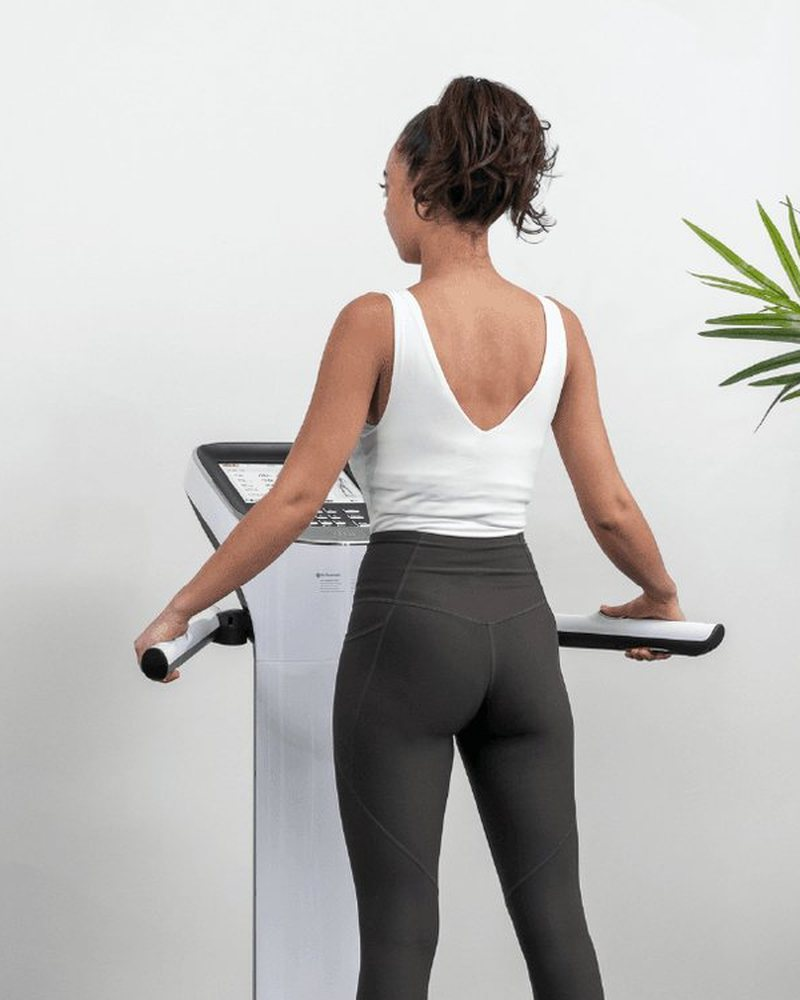

Dos personas comen lo mismo y absorben cantidades distintas. Tu insulina, tu microbiota y tu tiroides deciden qué pasa con cada comida — y ninguna de las tres se mide antes de mandarte una dieta.
Quiero empezar →Online o presencial en Miami · Sin dietas genéricas: tu plan sale de tus propios marcadores

Mientras la insulina está elevada, el cuerpo no puede quemar grasa aunque comas poco. Esa es la razón por la que se puede pasar hambre durante meses y ver muy poco movimiento en la balanza.
A eso se suma la microbiota: dos personas comen exactamente lo mismo y absorben cantidades distintas, porque las bacterias que procesan esa comida no son las mismas. Comparar tu resultado con el de otra persona no dice nada.
Y encima está la tiroides. El examen estándar mide TSH, que es la orden que manda la pituitaria — no la hormona que da energía a la célula. Se puede tener TSH normal y T3 libre baja al mismo tiempo.
Ninguna de estas tres cosas se arregla con más fuerza de voluntad. Se miden, y con el número delante el plan cambia.
No solo glucosa: cómo responde tu cuerpo a lo que comes, que es lo que decide si la grasa se guarda o se usa.
Qué bacterias procesan tu comida y cuánto extraen de ella. Explica por qué tu resultado no se parece al de nadie más.
TSH, T3 y T4 libres y anticuerpos. No solo la orden que se manda, sino la hormona que de verdad llega a la célula.
Tu InBody: grasa visceral, músculo y agua por separado. Bajar de peso perdiendo músculo no es ganar, aunque la balanza diga que sí.
Ocho preguntas rápidas sobre qué te pasa, desde cuándo y qué te han dicho hasta ahora. Toma dos minutos y no cuesta nada.
Revisa tu caso contigo, te dice con franqueza si es para nosotros y te explica qué incluye la evaluación y cómo se paga.
Tu BioScan de 900+ biomarcadores y tu InBody, leídos contigo. Sales con un plan escrito, no con una lista de suplementos.
No te vamos a mandar a comer menos. Te vamos a decir qué está pasando en tu cuerpo con lo que ya comes, y qué cambia cuando lo sabes.
Quiero empezar →Preparando tus preguntas…